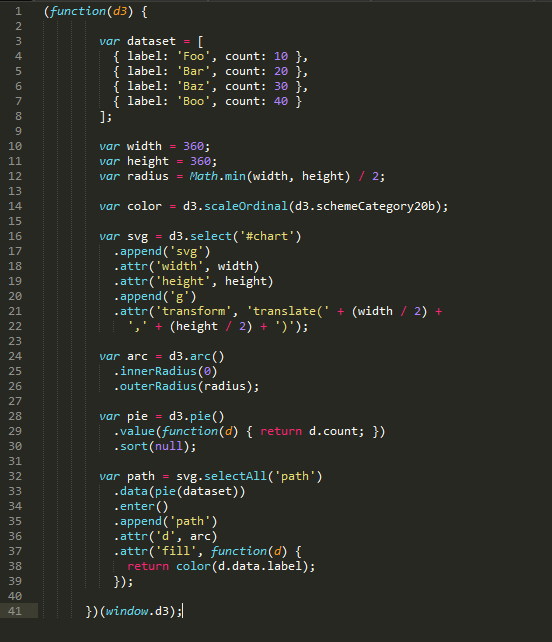

So far we’ve know how to draw basic shapes such as circle, rectangle and ellipse with D3. In this section, we will learn how to use D3 to interpret a section of data and draw a pie chart with it. Before we actually draw the pie chart, let’s first talk about what type of data can D3 interpret.
The most common structure of data that D3 could understand is array. For example:
var matrix = [
[11975, 5871, 8916, 2868],
[ 1951, 10048, 2060, 6171],
[ 8010, 16145, 8090, 8045],
[ 1013, 990, 940, 6907]
];
var tr = d3.select("body")
.append("table")
.selectAll("tr")
.data(matrix)
.enter().append("tr");
var td = tr.selectAll("td")
.data(function(d) { return d;)
.enter().append("td")
.text(function(d) { return d; });
The API we are going to use is: selection.data([data[, key]])
In this example, we create a matrix with 4 rows and 4 columns. This matrix is represent by an array of 4 subarrays. We also could make an array of objects. For example:
var jsonCircles = [
{x_axis: 30,
y_axis: 30,
radius: 20,
color : "green"
}, {
x_axis: 70,
y_axis: 70,
radius: 20,
color : "purple"
}, {
x_axis: 110,
y_axis: 100,
radius: 20,
color : "red"
}];
This array contains 3 objects which are circles of different positions and colors. Note that the objects could also be JSON objects.
Now we've understand the data structure of D3. let's move on to talk about how to draw pie charts with an array of objects. First let’s define some data:
var dataset = [
{ label: 'Foo', count: 10 },
{ label: 'Bar', count: 20 },
{ label: 'Baz', count: 30 },
{ label: 'Boo', count: 40 }
];
For the color of the pie chart we could use such API: d3.scaleOrdinal(d3.schemeCategory20b). This contains an array of twenty categorical colors represented as RGB hexadecimal strings. Next we will make a SVG element:
var svg = d3.select('#chart')
.append('svg')
.attr('width', width)
.attr('height', height)
.append('g')
.attr('transform', 'translate(' + (width / 2) + ',' + (height / 2) + ')');
This may look pretty complicated at the first sight. But if you could take a look line by line, you will find the idea is the same as the previous section. This code first uses the “select” method to select where to create the chart. In this example, the we choose to create the chart at the id = chart. Then it uses the append method to put the pie chart to such location. Next, we set the width and height of the SVG container. The “g” element means the container contains a group of SVG elements, and “transform” attribute defines a list of transform definitions that are applied to an element and the element's children. To set the radius of the pie chart, we use the d3.arc() API:
var radius = Math.min(width, height) / 2;
var arc = d3.arc()
.innerRadius(0)
.outerRadius(radius);
The inner radius is set to 0 because all the pies are gathered at one point in the middle of the circle.
For the angles of each segments, we use d3.pie() API:
var pie = d3.pie()
.value(function(d) { return d.count; })
.sort(null);
The function returns each object's count as the angle. Here is our example chart:
Here is the code for our chart:
